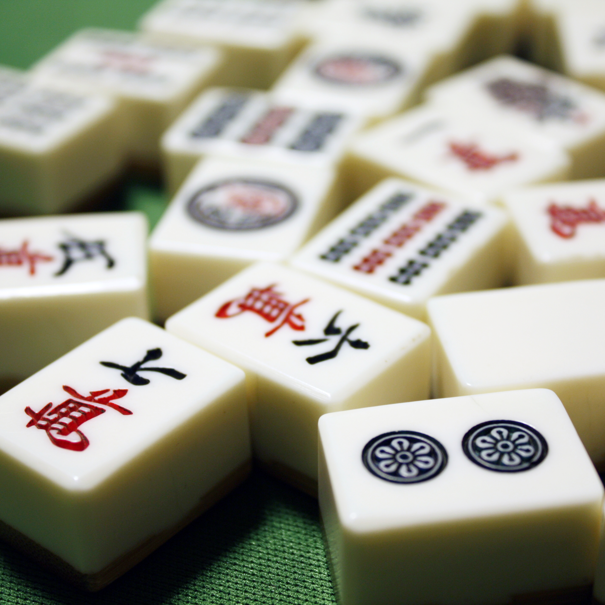

〈麻雀ってどんなゲーム？〉

3種の数字牌、7種の字牌を使って役を作るゲームで、大体は4人で四角い卓を囲んで遊びます。なるべく難易度の高い役（価値も高い）を作りながら、最終的に一番得点を稼いだプレイヤーが勝利となります。
東場、南場各4局の全8局を戦うことになりますが、ゲーム終了後の総得点数1位のプレイヤーが勝利するため、優勢のときは早めに局を終わらせる、劣勢の際は高い役で逆転を狙いにいくなど、大局を意識しておく必要があります。
〈使う牌の種類〉

萬子（マンズ、ワンズ）と呼ばれる。1から9までの数字で構成されている。各数字4枚しかない。赤ドラは「五萬」。順子（ジュンツ＝連番3枚）と刻子（コーツ＝同じ牌3枚）を作るときに使用できる。

筒子（ピンズ）と呼ばれる。1から9までの数字で構成されている。各数字4枚しかない。赤ドラは「五筒」。順子（ジュンツ＝連番3枚）と刻子（コーツ＝同じ牌3枚）を作るときに使用できる。

索子（ソーズ）と呼ばれる。1から9までの数字で構成されている。各数字4枚しかない。赤ドラは「五索」。順子（ジュンツ＝連番3枚）と刻子（コーツ＝同じ牌3枚）を作るときに使用できる。

風牌（フウハイ）と呼ばれる。東南西北の漢字で構成されている。各字4枚しかない。自分に割り当てられた方角、場の方角の牌を3枚集めるだけで役が成立する。刻子（コーツ＝同じ牌3枚）を作るときに使用できる。

三元牌（サンゲンパイ）と呼ばれる。白、發、中の漢字で構成されている。各字4枚しかない。同じ牌を3枚集めるだけで役が成立する。刻子（コーツ＝同じ牌3枚）を作るときに使用できる。